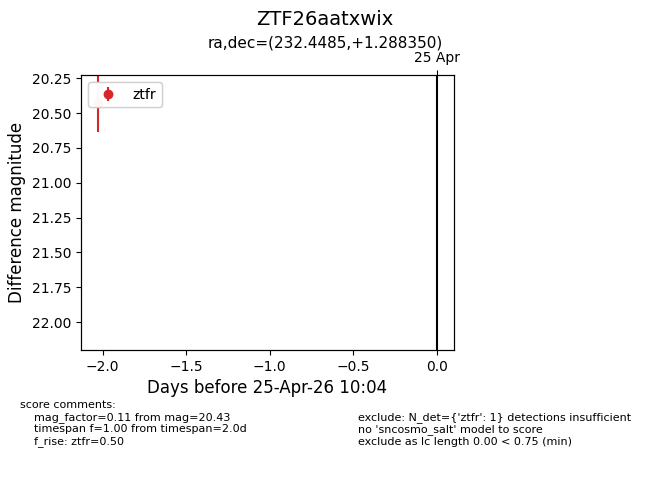
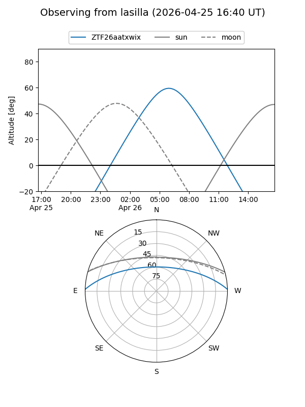
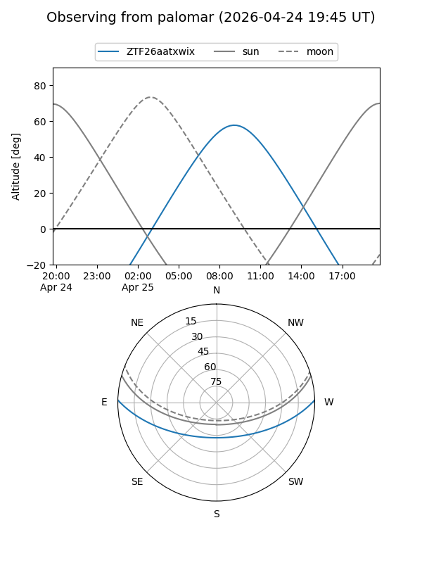

ZTF26aatxwix
Target ZTF26aatxwix at 2026-04-25 10:05
Aliases and brokers:
FINK: link
Lasair: link
ALeRCE: link
alt names
ZTF26aatxwix (ztf,fink_ztf)
Coordinates:
equatorial (ra, dec) = 232.4485,+1.28835
equatorial (HMS+DMS) = 15:29:47.64,+01:17:18.06
galactic (l, b) = (5.4577,+44.10178)
Flags:
Photometry:
last ztfr=20.43
1 ztfr detections
Lightcurve

Visibility


Additional plots